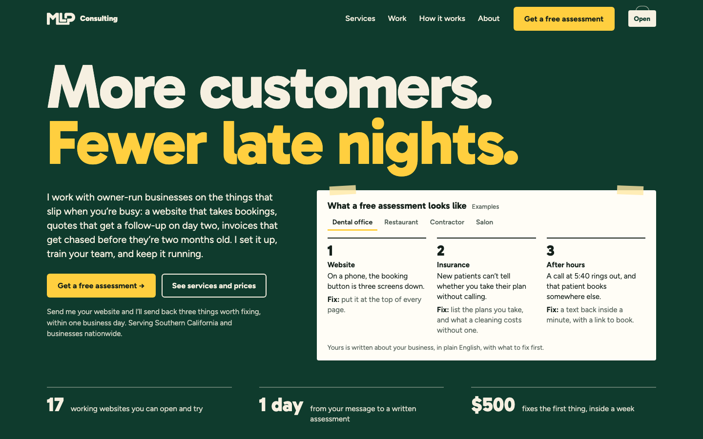
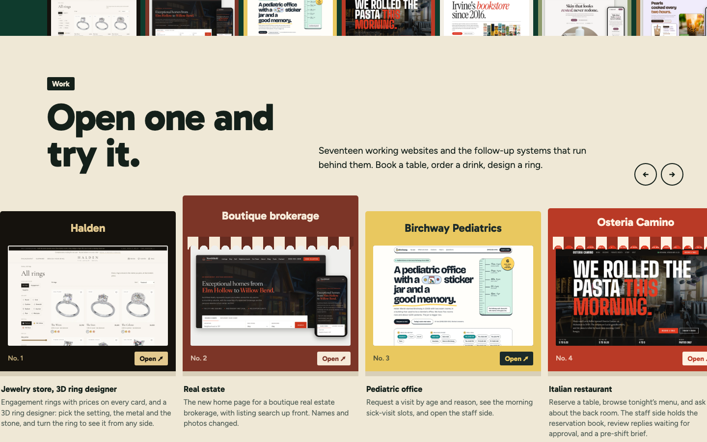
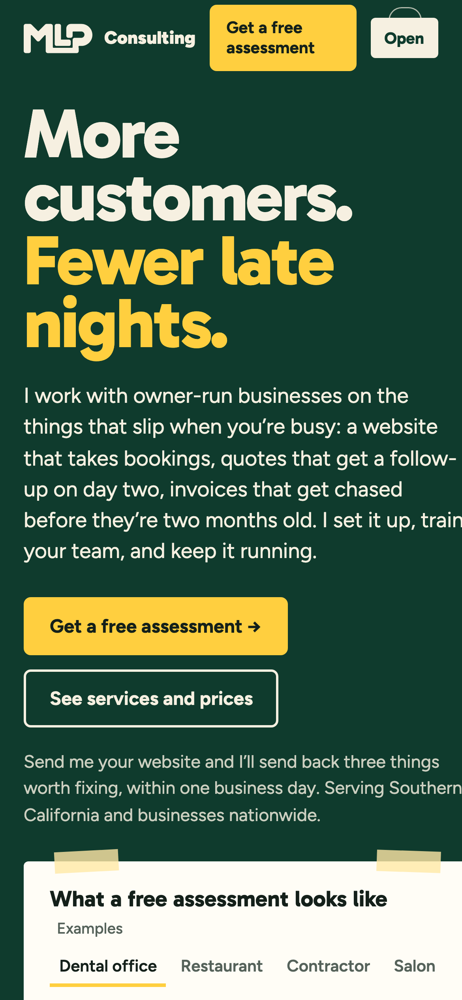
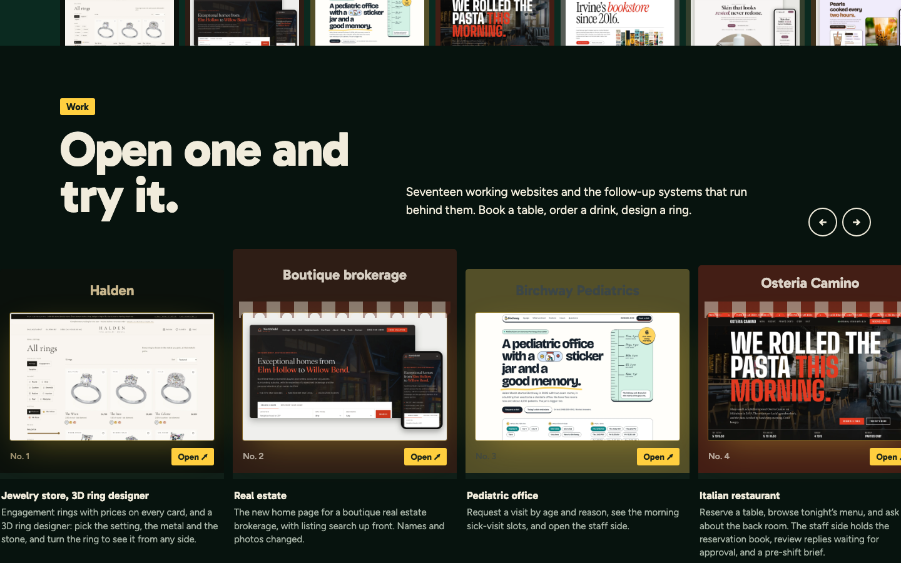
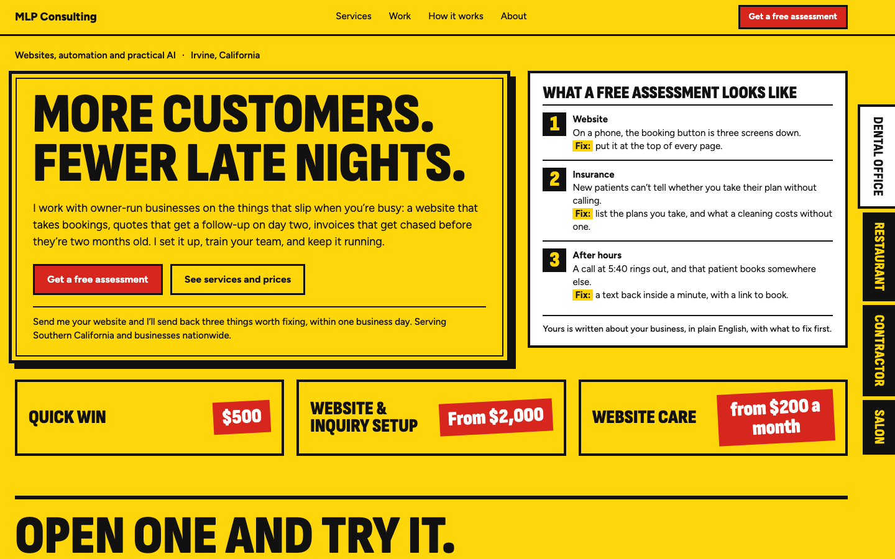
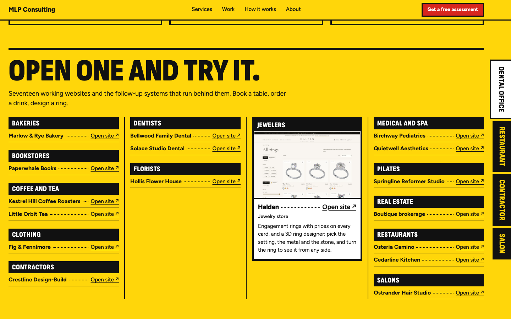
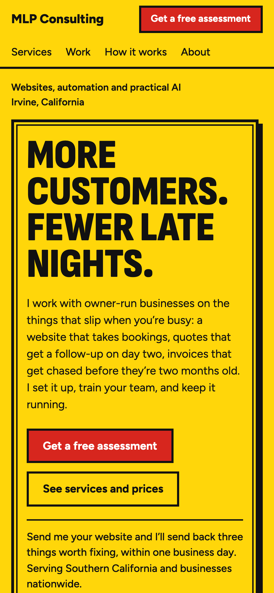
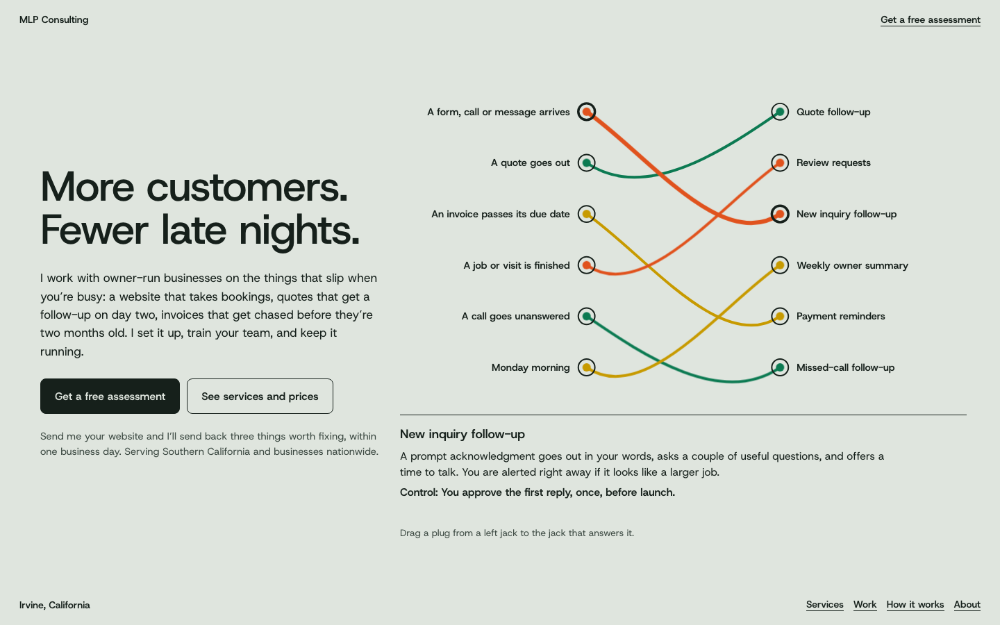
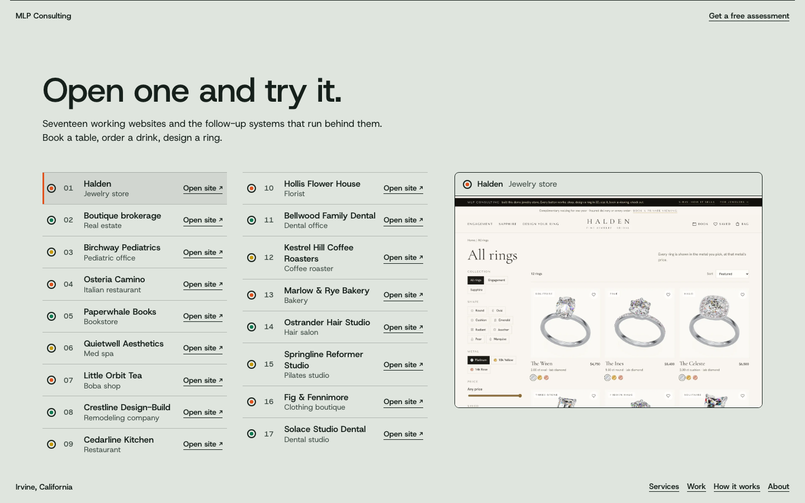
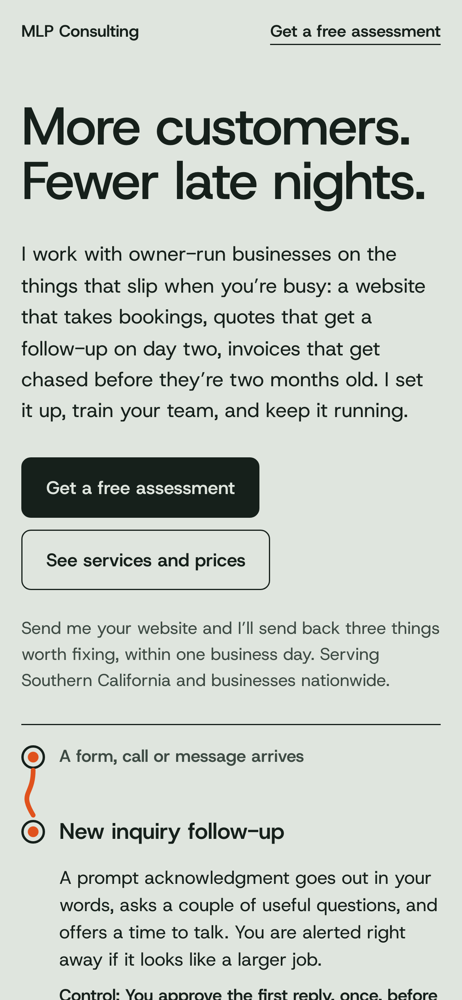

Rough heroes plus one inner section, same copy in each. Scored 1 to 5 on fit (would an owner recognise their world), distinctness, usability (what he does, proof, price and contact in seconds) and buildability. Built 2026-11-21.
A consultancy site built like the row of shops it works for, seen from the sidewalk. Each of the 17 demo sites is a shopfront whose window shows the live site; the type is sign lettering; the colours are the shops’ own; the door sign flips from Open to After hours and the windows become the light.
| Fit | Distinct | Usable | Buildable |
|---|---|---|---|
| 5 | 4 | 5 | 4 |




The site as a page of a classified directory: MLP’s own display ad, price boxes, the 17 sites listed by trade, a thumb index down the edge. Fast to read and prices are immediate. Rejected because the medium it borrows is the one his customers stopped using, the red price bursts read as a discount flyer for a consultancy, and the yellow ground repeats Opening Act v1.
| Fit | Distinct | Usable | Buildable |
|---|---|---|---|
| 3 | 4 | 4 | 5 |



Every line coming into a small business gets patched to something that answers it; the visitor can plug the cords. Rejected because it sells the automations and hides the websites, which are what most owners come for; no price is in the first view; and a pale grey-green ground with a thin grotesk reads as a tasteful software diagram.
| Fit | Distinct | Usable | Buildable |
|---|---|---|---|
| 3 | 3 | 3 | 4 |



One detail carried from B into A: the list of all 17 by name, as the plaza’s tenant directory beside the street.